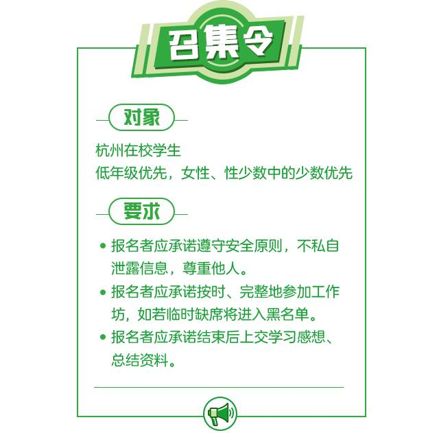
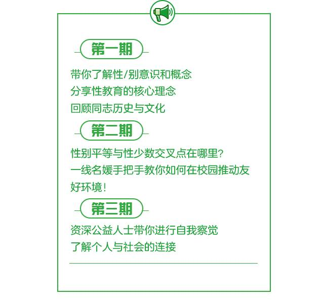
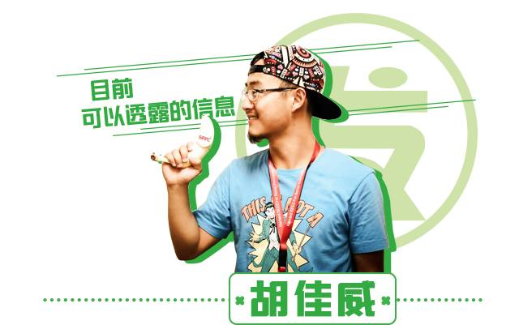
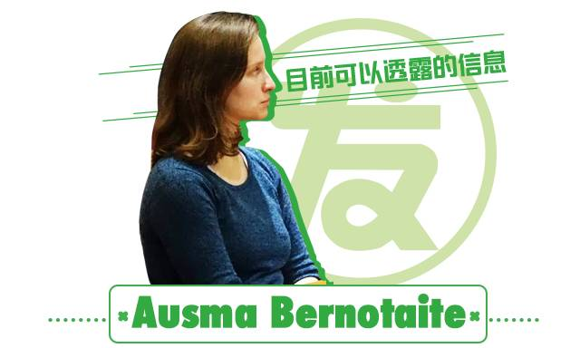
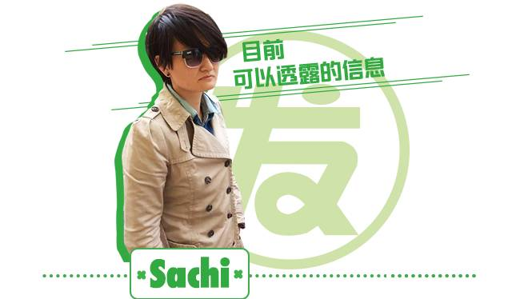

可能是杭州最厉害的多元性别工作坊/来为苦瓜菌的多元校园环境努力吧！
我是苦瓜菌，我在杭州求学
生活在这样一个充满人文关怀和秀丽风景的城市
我却偶尔会感到
困惑、焦虑、不安
这些与我的性别表达、性倾向紧紧相关
我会因为没有”男子气质“或”女人味“
受到老师、同学的异样眼光或者“教育”
我不敢向我亲密的朋友透露我的性少数身份
因为我怕ta疏远我
我很少逛学校论坛/贴吧
因为上面太多让人不舒服的言论
我对性行为又害怕又渴望
却又无法获得准确的信息
我希望杭州的校园环境
可以变得更友好、多元、包容~
不同性别、性倾向、性别表达的人们
可以在这里安心享受大学生活~
而这，你可以做到！
苦瓜菌
邀请了一群
多元性别和性教育领域的先行者
一线“名媛网红”们
为你定制了
三期
杭州高校多元性别工作坊 ！
在这里
你将通过
参与式分享
头脑风暴
活动体验
话题讨论
由入门到提升，一步步探讨多元性别议题
促进自我察觉和个人思考成长
最终投入到多元性别和性教育的行动中！





每期工作坊均为一个白天，时间为 5月的周末 ，第二期与第三期为同一周末连续进行。
地点： 杭州市区
我们希望大多数参与者能够连续参与第一、二期，而第三期将由第二期的优秀参与者选出我们将为两期都参与的同学提供免费住宿！
工作坊不收取任何费用，我们将提供 免费午餐 ，交通费用自理。


保护豆豆儿童性教育老师，2015年哈佛社会创新种子班学员。拥有4年青少年性教育经历，2年儿童性教育公益创业经历。曾担任江苏省地区高校同伴教育主持人培训师。擅长设计互动、体验式的儿童性教育课程。目前致力于互联网儿童性教育。


Ausma是Diversity (宁波诺丁汉大学注册LGBT社团社团) 和QHumanity创始人之一。Diversity LGBTQ+是宁波一个提供安全空间、增进社区团体交流的地方，QHumanity则着力于中国与世界间的研究交流。Ausma是一名社会活动家，关注女权主义和LGBTQ+话题，她对寻找这一领域的研究合作项目很感兴趣。


我是来自宁波的Sachi Qin,老家内蒙古。现就读于宁波诺丁汉大学，国际高等教育硕士。本科也在宁波诺丁汉大学，国际文化交流学士。还有继续待下去的倾向，呆在一个地方就懒得挪窝了。投身LGBTQ+工作是因为Diversity的建立，这个社团让我意识到，一个组织，一个社群可以为LGBTQ+人带来多大的安慰。我希望自己无论是在那个城市，都可以继续做这方面的服务；支持这个社群，也其实就是支持我自己。我最近最喜欢的电影《和平战士》，它还有个很挫的别名《深夜加油站遇见苏格拉底》。我最喜欢的公众微信号DiversityUNNC，我没有打广告~


如果你想收获来自朋辈导师和名媛网红的分享、协作，结识有着同样理想的小伙伴，并在未来获得行动上的继续支持的话，赶紧报名咯！
截止时间： 5月4日24点
如有问题请联系：louiselding@outlook.com
报名表二维码